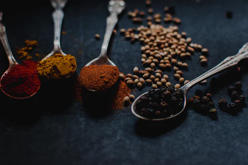
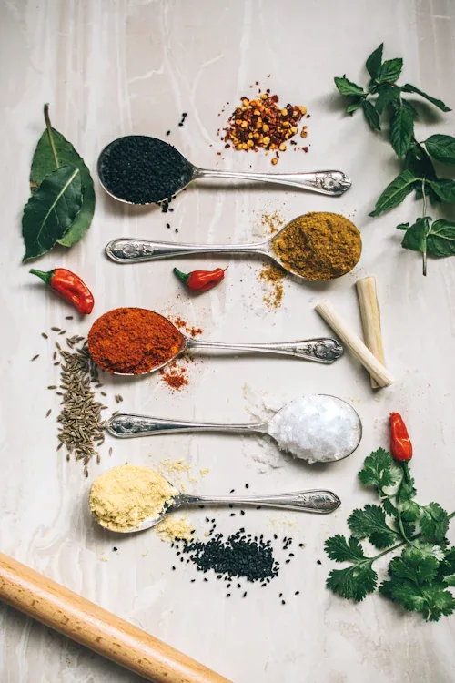

Discover nature's finest harvest organized into carefully curated collections of clean, nourishing foods.
 24 Products
24 Products
Sun-ripened orchard apples, berries, and citrus harvested at peak nutritional maturity.
 36 Products
36 Products
Crisp leafy greens, crunchy roots, and nutrient-dense farm vegetables free from chemicals.
 18 Products
18 Products
Ancient unpolished grains, organic brown basmati rice, quinoa, and high-fiber millets.
 14 Products
14 Products
Grass-fed wholesome milk, farm artisanal butter, organic paneer, and pasture-raised eggs.
 22 Products
22 Products
Slow-roasted almonds, walnuts, sun-dried figs, and clean-label nutrient bars.
 12 Products
12 Products
Unprocessed raw forest wildflower honey, natural peanut butters, and fruit preserves.
 16 Products
16 Products
Wood-pressed mustard, virgin coconut, extra virgin olive, and sesame oils.
 19 Products
19 Products
Artisanal kombucha, whole leaf green tea, cold-pressed citrus juice, and herbal tonics.

15 ProductsAromatic basil, rosemary, mint, oregano, and coriander freshly snipped at dawn.

28 ProductsOrganic whole spices, pulses, pink Himalayan salt, and unrefined coconut sugars.
 16 Products
16 Products
Nutrient-dense chia seeds, organic flax seeds, spirulina powder, and antioxidant cacao nibs.
 20 Products
20 Products
Sun-dried mountain figs, California raw almonds, seedless black raisins, and royal organic cashews.
Each category is cultivated in its optimal micro-climate and native soil conditions.
Orchard apples, table grapes, citrus groves, and raw mountain wildflower apiaries.
Heritage brown basmati, heirloom wheat varieties, unpolished pulses, and mustard seeds.
Virgin coconut oil, cold-pressed sesame, shade-grown whole leaf tea, and black pepper.
Year-round chemical-free baby spinach, heirloom carrots, broccoli, and crisp salad herbs.
Eating in rhythm with nature ensures your produce contains higher levels of vitamins, phytonutrients, and natural flavor while supporting regenerative farming cycles.

Every product line satisfies our strict laboratory analysis before reaching your basket.
Screened against 240+ agricultural pesticides and chemical ripening compounds.
Cultivated exclusively with open-pollinated, heirloom indigenous seed varieties.
Extracted below 45°C without heat refining, deodorizers, or chemical solvents.
Free from synthetic antibiotics, artificial hormones, or industrial caged farming.
Everything you need to switch your home pantry into a 100% organic sanctuary.
Brown basmati rice, cold-pressed coconut oil, chia seeds, and Himalayan pink salt.
Raw wildflower forest honey, California raw almonds, and whole leaf green tea.
Extra virgin cold-pressed olive oil paired with wood-pressed virgin mustard oil.
Choose fresh, certified organic and responsibly sourced food for a healthier, more vibrant everyday lifestyle.